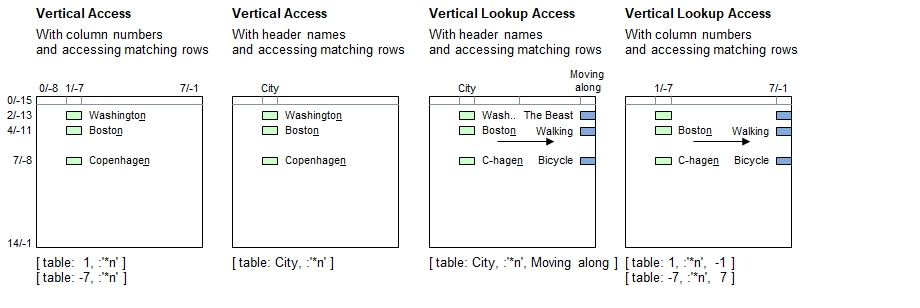

Introduction
Alternatively to sets, wildcards can be specified using softquoted strings (i.e. with Text inside single quotation marks) to compare the entries in the specified column and pick up all row numbers with matching comparisons. A leading colon (:) is required to instruct B4P to search the table for matching contents.
Syntax for Full Table Specification
The header name patterns must begin with a colon (2 consecutive colons are actually needed if the table name specified before), followed by the softquoted string value.
| [ | Table Name | : | Simple Column Specifier | , | : Contents Search Pattern | ] |
|---|---|---|---|---|---|---|
| Must be a string | - Matching contents (string), or | - Must be a softquoted | ||||
| - Positive row number, or | string, recommended to use | |||||
| - Negative row number | wildcard symbols |
Syntax for lookup access (Choose column, followed by the row, and pick up data from a different column):
| [ | Table Name | : | Simple Column Specifier | , | : Contents Search Pattern | , | Simple Column Specifier | ] |
|---|---|---|---|---|---|---|---|---|
| Must be a string | - Header name, or | - Must be a softquoted | - Header name, or | |||||
| - Positive column number, or | string, recommended to use | - Positive column number, or | ||||||
| - Negative column number | wildcard symbols | - Negative column number |
Lookup access: If a set or a header name pattern is encountered in the Simple Column Specifier instead of a simple value (string or numeral), then the 1st column found will be used to identify the row. If it contains no elements, then no lookup can be made and an empty set will be returned.
Principle

Programming examples
table load( table, "Examples\Cities.csv");
echo( [ table: 1, :'*n' ] ); // Cities ending with n
echo( [ table: -7, :'*n*' ] ); // Cities containing n
echo( [ table: 1, :'*n,*s' ] ); // Ending with n or s
echo( [ table: 1, :"*n" ] ); // No match (No data entry = "*n*)
echo;
echo( [ table: City, :'*n' ] ); // Cities ending with n
echo;
echo( [ table: City, :'*n', Moving along ] );
echo;
[ table: City, 2, Moving along ] = Ambulance; // Makes more sense for the moment.
echo( [ table: 1, :'*n', -1 ] );
echo( [ table: -7, :'*n', 7 ] );Output - Prefer choosing a climate friendly vehicle ...
{'Washington','Boston','Copenhagen'}
{'Washington','Boston','San Francisco','Montréal','Copenhagen','Venice','Los Angeles','Vienna','Bangkok'}
{'Washington','Boston','Copenhagen','Los Angeles','Paris','Davos'}
{}
{'Washington','Boston','Copenhagen'}
{'The Beast','Walking','Bicycle'}
{'Ambulance','Walking','Bicycle'}
{'Ambulance','Walking','Bicycle'}